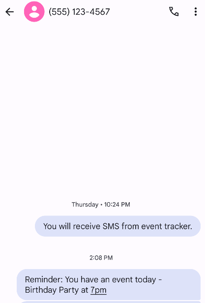
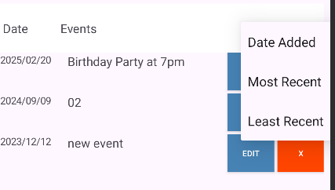
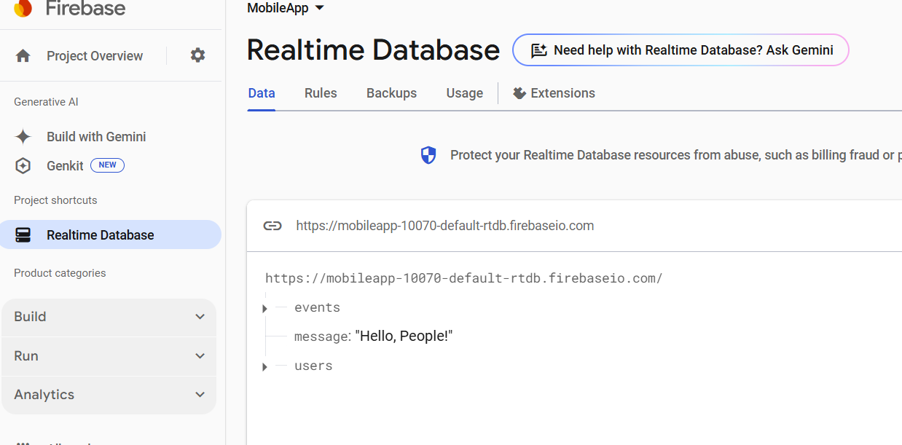

This portfolio showcases the key skills I have developed in the Computer Science program at SNHU. Specifically, it highlights my learning in three categories: Software Design and Engineering, Algorithms and Data Structures, and Databases. While these skills were gained through various courses, one class that particularly exemplified them was CS 360 – Mobile Architecture and Design. For this portfolio, I have chosen the EventTracker app that was built in CS 360 as my artifact to enhance across all three categories.
Both the original and enhanced versions of the app are provided in the 'EPortfolio' repository linked above, under the capstone_preEnhanced and capstone_enhanced folders, respectively. For users who prefer to download them separately, I have also included links to the original repositories below.
Repo of the Enhanced Event Tracker
Repo of the Pre Enhanced Event Tracker
Beyond the technical skills and knowledge, I learned how to effectively divide tasks, merge code contributions efficiently, and resolve conflicts within a team. I became proficient in using version control tools like Git to manage projects and collaborate on existing work. I was able to apply what I learned at SNHU to my internship, where I worked with a cross-functional team to build applications. My understanding of gathering requirements, documentation, and writing readable code was immensely helpful during my internship, ensuring smooth collaboration and project tracking. This ability to work cohesively in a team environment is essential for success in software development roles.
Effective communication with stakeholders is another crucial skill I have developed throughout my program. In both technical and non-technical discussions, I have learned to convey complex concepts clearly and effectively. I frequently interacted with teachers and students to gather project requirements, which helped me build confidence in my decisions. Additionally, my coursework required me to document software designs, write reports, and present project outcomes to instructors and peers, further refining my ability to communicate technical ideas to diverse audiences. These experiences have strengthened my confidence in engaging with stakeholders, a skill that will be invaluable in my career.
For the Software Design and Engineering portion of my project, I converted the code from Java to Kotlin and added an SMS notification feature. I chose to keep some Java code to showcase my proficiency in both languages and to demonstrate my ability to integrate multiple programming languages within the same project. This process highlights my strong foundational understanding of software principles, which allows me to transition between languages. Prior to this assignment, my experience was limited to Java when it comes to app development. However, I was able to quickly transfer my knowledge to Kotlin because, despite differences in syntax, the core programming concepts remained largely the same. This ability to adapt to new languages and frameworks highlights my versatility and my ability to adapt, two key qualities for success in software engineering.
Image of sms notification successfully sent:
Here is a video demo of the enhancement: Enahancement 1 Video Demo - Software Design and Engineering
More details are present in "Narrative 1 - Software Design and Engineering" .
In addition to the language conversion, I applied concepts from my Data Structures and Algorithms class by implementing a sorting function within the project. Specifically, I implemented the Bubble Sort algorithm to sort the events based on their dates. While there are built-in sorting libraries available, I chose to implement the algorithm manually to showcase my understanding of how complex algorithms work and how to optimize them for efficiency. By manually coding the sorting process, I was able to reinforce my knowledge of algorithms and data structures while ensuring that the app could sort events based on different criteria: most recent, least recent, and date added. This decision to write the sorting function from scratch demonstrates not only my ability to apply technical concepts but also my problem-solving skills and attention to detail, key strengths that I can carry forward into future projects.
Image of sort options:
Here is a video demo of the enhancement: Enahancement 2 Video Demo - Algorithm and Data Structure
More details are present in "Narrative 2 - Algorithm and Data Structure."
Lastly, I converted the database from Android Studio’s built-in SQLite to a cloud-based database called Firebase. The primary reason for this transition was to enable real-time data updates. With Firebase, multiple users can simultaneously access and update the database, which is crucial for ensuring that changes are reflected across all devices in real-time. This improvement enhances the app’s functionality, making it more scalable and dynamic, especially in multi-user environments. This transition taught me how to work with cloud-based databases and handle data synchronization, giving me the expertise to work on modern, cloud-driven applications.
Image of Firebase Web:
Here is a video demo of the enhancement: Enahancement 3 Video Demo -Database
More details are present in "Narrative 3 - Database"
Security is very important and has been a priority throughout my courses in the program. In the Event Tracker app, I incorporated Firebase Authentication to manage user access securely, ensuring that sensitive data remained protected while users could interact with the app. These experiences have reinforced my understanding of the importance of secure development practices, which I will continue to prioritize in future projects.
The enhancements made with the EventTracker App, demonstrate my ability to integrate my knowledge across key areas of Computer Science. From the initial Java to Kotlin code conversion to the database migration to Firebase, each enhancement showcases my versatility and technical growth. By working with different programming languages, cloud technologies, and real-time data management systems, I have not only expanded my technical expertise but also developed the skills needed to build scalable, user-friendly, and secure applications. My portfolio serves as a reflection of my growth as a computer scientist and my readiness to tackle challenges in the ever-evolving tech industry..